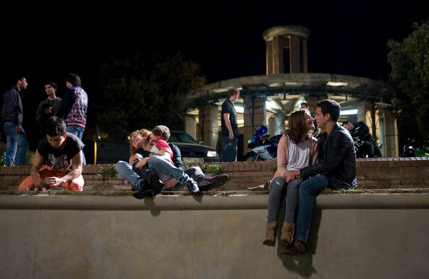

Opinión Sobre La Película
Realmente consideró esta película como una de mis favoritas, amo el cine y más lo que tiene que ver con drama y romance, Tres metros sobre el cielo lo tiene todo para los amantes de estos géneros y si te gusta el acento españolete, serás otra persona obsesionada con esta película. Como lo sabemos los personajes principales son Babi y Hache que vienen una historia de amor extraordinaria, hay momentos felices como cuando Babi y Hache escapan de la policía por una competencia de motos y al otro día en la habitación de Babi hay un póster pegado en su techo o también cuando van a la playa y pasan un día espectacular, pero también hay momentos de tristeza y de nostalgia como la muerte del mejor amigo de H conocido como Pollo o cuando Babi y H terminan por sus comportamientos violentos y ella conoce a una nueva persona, también en la segunda parte de la película cuando ya no están juntos, mejor dicho si no entendiste nada de lo que dije, mejor ve a ver la película, super recomendada.

Rodaje
Tres metros sobre el cielo, fue rodada en Barcelona, Sant Boi, Sant Adrià del Besós, Hospitalet de Llobregat, St. Feliu de Guixols, Sta. Cristina d'Aro, Argentona, Teià y Canet de Mar. Como lo dije anteriormente La película "A Tres Metros Sobre el Cielo" está basada en un libro de Federico Moccia. En realidad la historia del libro transcurre en Roma, pero la película se rodó en Cataluña. Hay ciertas escenas que no tienen mucho sentido sabiendo las localizaciones reales, ya que tanto pueden estar en Barcelona como en Canet de Mar en la escena siguiente, pero en parte esta es la magia que tiene el cine. Dejare el link por si quieres visitar la página donde muestran varios lugares del rodaje de la película.
Copyright © 2022 Diana Katalina Gil Rubio-"Producto desarrollado para fines educativos del Servicio Nacional de Aprendizaje - SENA"